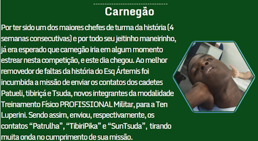
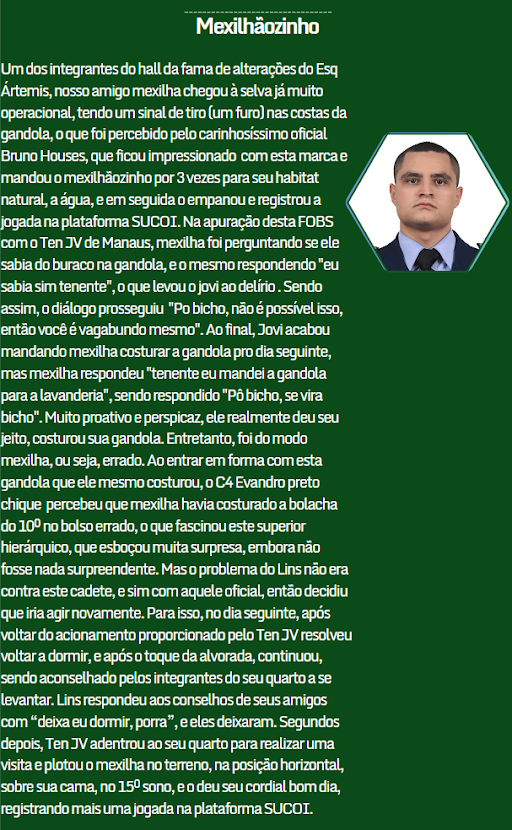
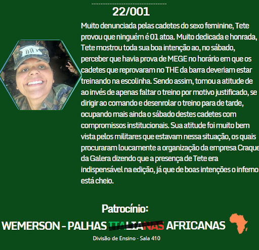

A series
Grupamentos Que valem ouro
SEMANA 25
Saindo de Cachimbo e voltando para AFA, o Craque da Galera volta com as alterações no âmbito do CCAer, mas com coincidências inusitadas. Quais seriam? Gedai Mestreselva e Yankió, que travaram uma sangrenta batalha na última edição, mostraram que este conflito não morreu no Pará, ela continua em Pirassununga. Yankió veio treinando com o Ten Thierry da defesa pessoal para, dessa vez, desbancar Gedai, que agora é do apoio. Além destes, temos 4 estreantes... MEXILHA: fez a maior parte da sua jogada em cima do Ten João Vitor, e em cima da cama também, mostrando que ele não sai atirando alterações por aí, ele tem um alvo fixo, e pô, bicho, esse alvo é de Manaus. Lucas Waze mostrou que mesmo sendo da orientação não se localizou ainda e fez a jogada ignorando a hierarquia da Chefe do Comando Verde, que também foi usada por Gedai na sua jogada, mostrando que essa turma tem gostado da ideia de atacar o comando para aparecer por aqui. Carnegão também não deixou de atacar oficiais, mas dessa vez, assim como Yankió, foram os da Seção de Educação Física, mas foi de uma maneira mais cibernética, enquanto Yankió desferiu ataques corporais. Nossa soldada mais importante, a 001, participa com sua tradicional jogada de desenrolo bem intencionado e mal realizado. A democracia é uma invenção muito linda, então usem ela para decidir quem foi o Craque da Galera da semana 25



 
Vencedor: